レア
ルチア設定画
ルチアの姿をまとめた設定画。黒髪ツインテールに赤紫の瞳、小さな黒いコウモリ翼とハート型の尾、黒×赤のゴシックドレスにチョーカーが特徴です。第6弾のすべての場面は、この姿を基準に描かれています。
第6弾「ライバル降臨編」のカード全31種（設定画を含む）です。見習い悪魔ルチアの降臨と、裏目に出る作戦の数々の場面です。
カードの画像はWeb鑑賞用サイズです。原画の高解像度イラストは、この弾のイラストパックでご覧いただけます。
この弾の所持 0 / 31種（0%）― あと31種で、この弾はコンプリートです
カードの画像はWeb鑑賞用サイズです。原画の高解像度イラストは第6弾『ライバル降臨編』のパック紹介ページからBOOTHのパックでご覧いただけます。ガチャで所持しているカードには「所持 ×N」と表示されます。
レア
ルチアの姿をまとめた設定画。黒髪ツインテールに赤紫の瞳、小さな黒いコウモリ翼とハート型の尾、黒×赤のゴシックドレスにチョーカーが特徴です。第6弾のすべての場面は、この姿を基準に描かれています。
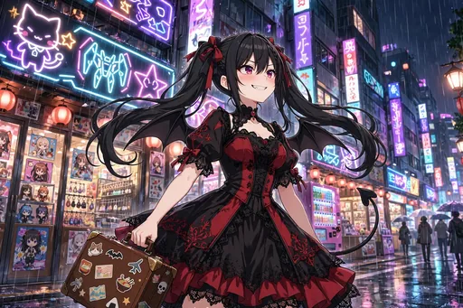
激レア
雨上がりの日本橋のネオン街に、トランクを提げて降り立ったルチア。セラフィナを堕落させる任務の始まりを告げる、第6弾の幕開けの一枚です。
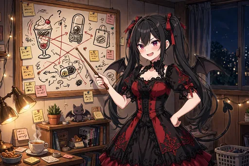
ノーマル
作戦ボードの前に立ち、ガチャやパフェでセラフィナを釣る計画を練るルチア。悪魔らしい真剣な横顔で、部屋の棚では黒猫ノワールが見守っています。
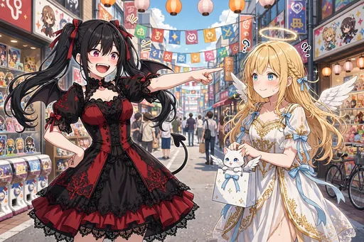
レア
祭りの賑わう日本橋で、セラフィナと初めて顔を合わせた場面。指を突きつけて宣言するルチアと、きょとんとするセラフィナの、ライバル関係の出発点です。
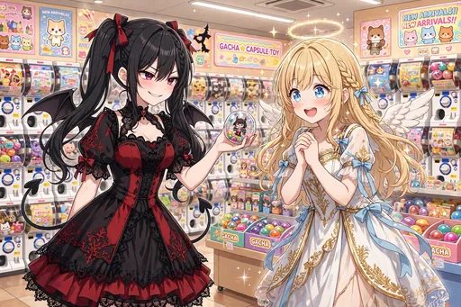
ノーマル
ガチャにハマらせようと、得意げにカプセルを見せるルチア。隣で目を輝かせるセラフィナに、作戦は順調……なはずでした。
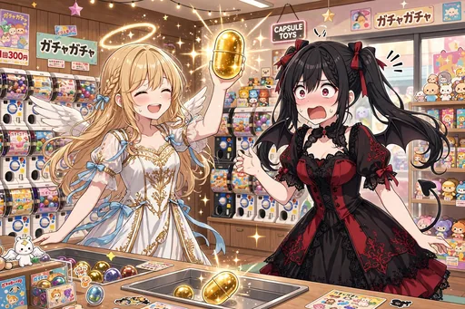
レア
金のカプセルを引き当てて大喜びのセラフィナと、信じられないものを見るルチア。釣るはずのガチャで、立場が早くも揺らぎます。
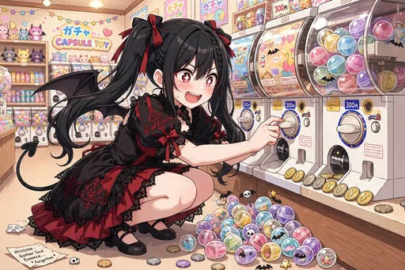
ノーマル
気づけばカプセルマシンの前にしゃがみ込み、大量のカプセルに囲まれるルチア。堕落させる側が先に沼にハマる、作戦失敗の決定的瞬間です。
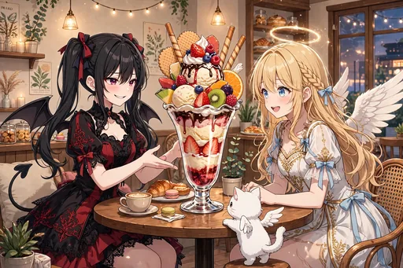
ノーマル
カフェで特大パフェを挟んで向かい合う二人。セラフィナをスイーツで釣る作戦のはずが、ルチアの視線もパフェに釘付けです。足元にはモコもいます。
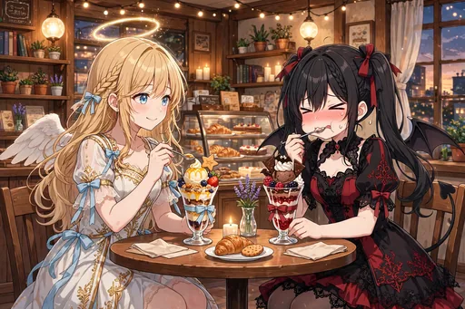
レア
結局、二人でパフェを分け合ってにっこり。作戦だったはずの時間が、いつの間にか楽しいおやつの時間になっています。
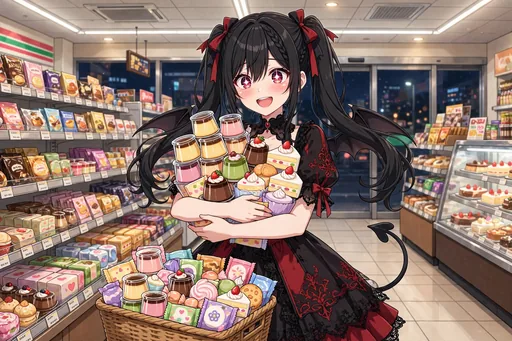
ノーマル
コンビニスイーツを両手いっぱいに抱えるルチア。プリンやゼリーの完成度の前に、悪魔の任務はひとまずおあずけです。
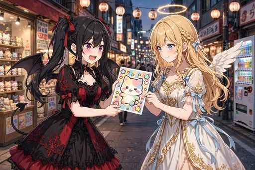
ノーマル
限定グッズのチラシをセラフィナに見せるルチア。今度こそ釣ってみせると意気込みますが、自分の目も輝いています。
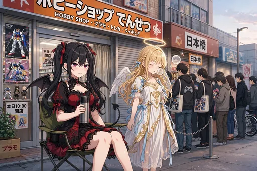
ノーマル
限定グッズ発売日の早朝、開店前のホビーショップに並ぶ二人。椅子に座って待つルチアの本気度が、作戦を超え始めています。
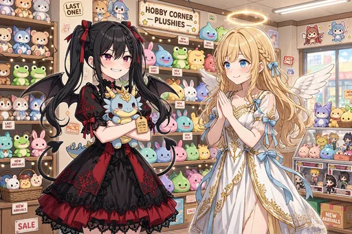
レア
ぬいぐるみ売り場で「最後のひとつ」を手にしたルチア。作戦のための買い物が、いつしか本気の推し活になっていました。
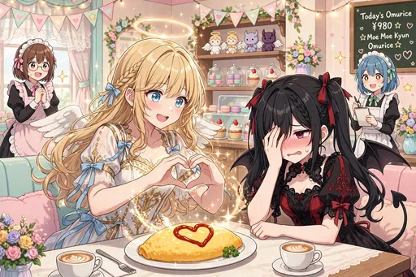
ノーマル
メイドカフェのオムライスを前に、ハートのポーズでノリノリのセラフィナ。隣のルチアは顔を覆って照れています。どっちが客か分からない一枚です。
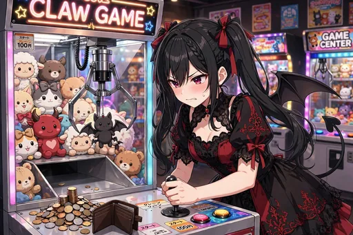
ノーマル
クレーンゲームに真剣勝負を挑むルチア。台の上には小銭とサイフが広がり、悪魔の意地が燃え上がります。
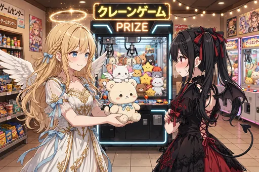
ノーマル
セラフィナが獲ったクマのぬいぐるみを、ルチアへ差し出す場面。受け取るルチアの照れた表情が、ライバル以上の何かを物語ります。
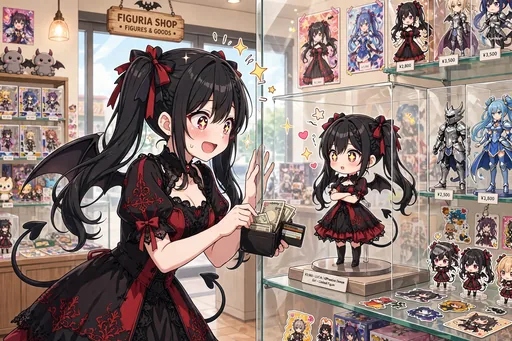
ノーマル
フィギュア店のケースで自分そっくりのフィギュアと対面したルチア。思わずスマホで撮ってしまう、複雑で嬉しい瞬間です。
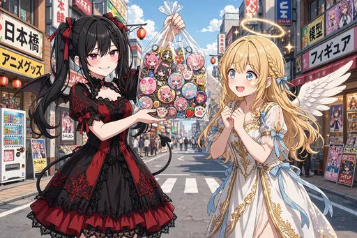
ノーマル
缶バッジで埋め尽くした痛バッグを、誇らしげに見せるルチア。もはや作戦ではなく、立派な推し活の成果です。
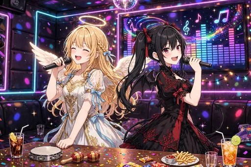
ノーマル
二人でマイクを握るカラオケの場面。歌い合ううちに息もぴったりで、ライバルのはずの距離が縮まっていきます。
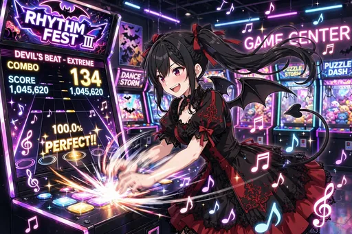
ノーマル
音ゲーでパーフェクトを叩き出すルチア。光るノーツに全集中する姿は、悪魔というよりゲーマーそのものです。
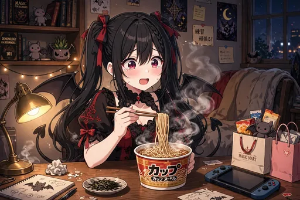
ノーマル
深夜、机でカップ麺をすするルチア。到達したような満足げな表情に、日本の深夜の味の深さがうかがえます。
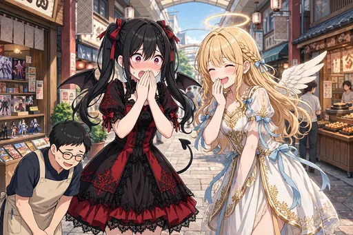
ノーマル
思わず関西弁が飛び出して、二人で口を押さえて笑う場面。染まっているのはセラフィナだけではないようです。
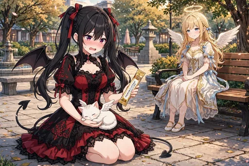
ノーマル
モコをおやつで買収しようとしたはずが、膝の上でくつろがれてしまったルチア。公園のベンチのセラフィナも、微笑ましく見守ります。
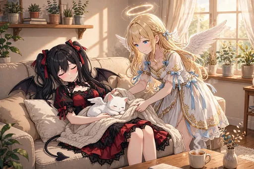
ノーマル
ソファでモコを抱いたまま眠ってしまったルチアに、セラフィナがそっと毛布をかける場面。ライバルの無防備な寝顔です。
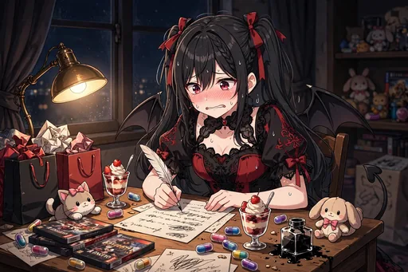
ノーマル
魔界への報告書を前に頭を抱えるルチア。「堕落作戦、成果なし」とは書きにくい、複雑な夜のデスクです。
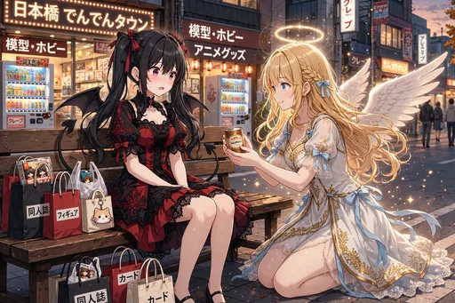
ノーマル
買い物袋に囲まれてベンチでひと息つくルチアへ、セラフィナが温かい飲み物を差し出す場面。癒す側と癒される側が、静かに入れ替わります。
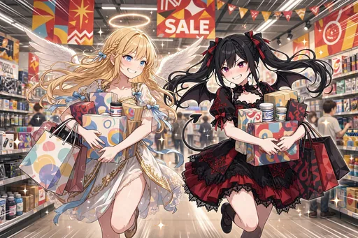
ノーマル
セールの店内で買い物袋を抱えて駆ける二人。翼まで使った本気の買い物は、もはや共同作戦です。
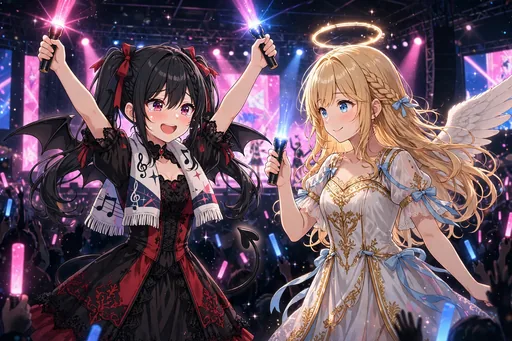
レア
ライブ会場でペンライトを振る二人。推しの光に照らされるルチアの笑顔は、悪魔の任務を完全に忘れています。
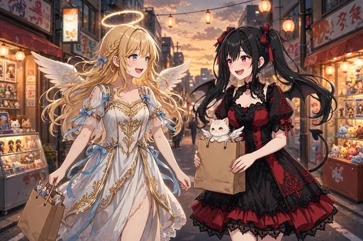
ノーマル
夕暮れの日本橋を、買い物袋を提げて帰る二人。モコもルチアのバッグの中から顔を出し、一日の終わりを一緒に歩きます。
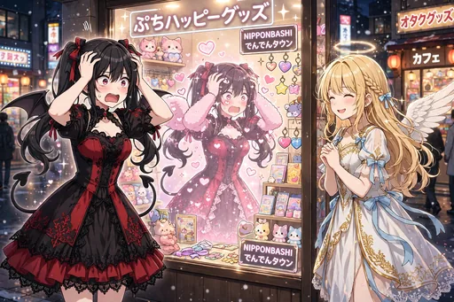
レア
店頭の自分のポスターに頭を抱えるルチア。堕落させるはずが、自分が日本橋の人気者になっていたという、第6弾のオチの一枚です。
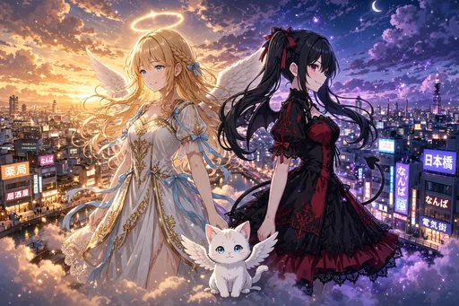
激レア
夕焼けの雲の上、日本橋を見下ろすセラフィナとルチア、足元にモコ。ライバルとして始まった二人の物語を象徴する、第6弾のキービジュアルです。